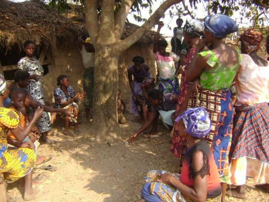

The Best and Worst Countries for Environmental Democracy
By jesse.worker - May 27th, 2015

By: Jesse Worker
This blog has been crossposted from www.wri.org
The environment and human well-being are inextricably linked. When governments, businesses and others make decisions about land and natural resources, they inevitably impact the health, livelihoods and quality-of-life of local communities. So it stands to reason that the public should have a right to be involved in environmental decision-making—specifically, to know what is at stake, to participate in the decision itself, and to have the ability to challenge decisions that disregard human rights or harm ecosystems.
These three fundamental rights are known as environmental democracy—and not all nations provide it to their citizens.
The new Environmental Democracy Index (EDI) is the first-ever online platform that tracks and scores 70 countries’ progress in enacting national laws that promote transparency, accountability and citizen engagement in environmental decision-making. The analysis, based on 75 indicators, identifies the best and worst countries for environmental democracy. The results may surprise you.
The Top Countries with Strong National Laws for Environmental Democracy
The top three countries are all former Soviet states—Lithuania, Latvia and Russia. Many of their relevant national laws were enacted as part of democratization reforms in the 1990s and the United Nations Economic Commission for Europe’s (UNECE) legally binding Aarhus Convention on access to information, public participation and access to justice in environmental matters. Lithuania and Latvia have both ratified this convention and strengthened their legislation after doing so, such as Lithuania’s amendments to its Law on Environmental Protection and Latvia’s passage of its Environmental Protection Law.
How Does the Environmental Democracy Index Work?
EDI was developed by the Access Initiative and WRI in collaboration with partners around the world. The index evaluates 70 countries, across 75 legal indicators, based on objective and internationally recognized standards established by the United Nations Environment Programme’s (UNEP) Bali Guidelines. EDI also includes a supplemental set of 24 limited practice indicators that provide insight on a country’s performance in implementation. The national laws and practices were assessed and scored by more than 140 lawyers around the world. Country assessments were conducted in 2014 and will be updated every two years. Scores are provisional until August 30, 2015 as results are being shared with governments and civil society for feedback until July 15.
For more information on how experts ranked the countries, please see our technical document.
Russia in particular may stand out to some as surprising, especially in light of several environmental activists recently fleeing the country out of fear for their freedom and safety. Therein lies a powerful lesson: Countries’ national laws may be quite progressive on paper, but the enforcement of those laws is oftentimes weak or subject to corruption.
All of the top 10 performers have statutes to support the public’s right to access government-held environmental information such as forestry management plans or mining permits, and all of them require at least a majority of government agencies to place environmental information like air and drinking water quality information in the public domain. While public participation scored the lowest across the index, all of the top 10 countries provide the public with the right to participate in major, national environmental decisions, such as infrastructure projects, forest management planning, pollution permitting and more. Lithuania stands out for having the highest score on the justice pillar. Its Civil Procedure Code and Law on Environmental Protection provides for communities to bring environmental cases in the public interest.
What’s also interesting about the top 10 performers is that wealth is not necessarily the defining factor of strong environmental democracy laws. Panama and Colombia are resource-strapped nations, and South Africa is an upper middle income country; nevertheless, they’ve committed to enacting strong environmental laws.
The Lowest-Scoring Countries for Environmental Democracy
Haiti, Malaysia and Namibia scored lowest on the index. Of the bottom 10 countries, some had right-to-information laws, but most lacked provisions requiring that government agencies proactively make environmental information public. In countries like Philippines, Republic of Congo and Pakistan, citizens need to go through time-consuming or expensive information requests to obtain crucial information like statistics on air or drinking water quality. The government may or may not honor these formal requests.
Many of the bottom performers also lacked requirements on collecting environmental information and monitoring compliance. National governments in Ethiopia, Nicaragua, Guatemala, Bangladesh and Thailand do not actually ensure that factories, mines and other facilities aren’t harming people or the planet. And requirements for public participation in these countries are almost always limited to environmental impact assessments, leaving out other important decisions such as the development of forest management plans, protected area policies or environmental protection laws.
One positive note is that even at the bottom of the list, Saint Lucia, Nepal, Sri Lanka and the Republic of Congo allow an individual to file lawsuits in the public interest. Otherwise, the right to challenge or appeal government or private sector decisions is not as well established in these countries.
There’s Room for Improvement Across the Board
Even in countries that scored relatively well, there’s still room for improvement. Almost 50 percent of the countries assessed, for instance, are not making real-time air quality data available online for their capital cities. And while nearly half of the countries require agencies to monitor environmental compliance, 64 percent of those with laws on the books do not release any information to the public on emissions or wastewater discharges, pollutants that can impact human health and the environment.
And even if countries have strong laws on the books, it doesn’t mean that they are adequately enforced. EDI measured countries based on the existence of national laws, not implementation. However, supplemental to the legal index, EDI includes 24 indicators on environmental democracy in practice. These indicators are not comprehensive, but they do provide some key insights to allow some comparison with legal scores.
National laws aren’t the only way to improve environmental democracy, but they’re an important first step. EDI can help governments who want to promote transparent, inclusive and accountable environmental decision-making by providing an index to benchmark progress, as well as examples of good practices from around the world. It’s time to give citizens a voice—for the good of the planet, and for the good of communities around the world.
Photo Credit: A community meeting in Ghana. Photo by waterdotorg/Flickr